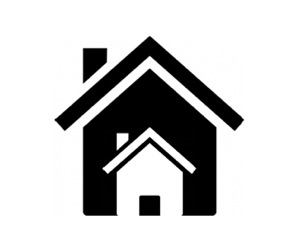
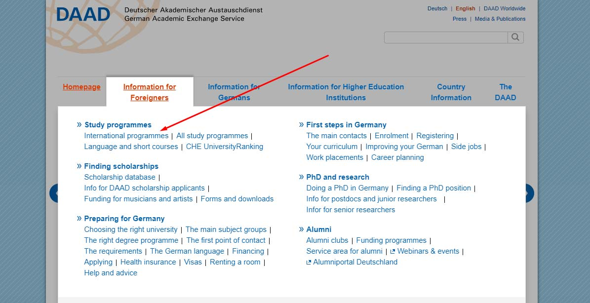

Notes & Thoughts
The Solitary Mind
Thoughts on life in computing, education and design — written between 2019 and today.
Engineering Technology vs Engineering
A central question for high school students, looking to build their career path towards an engineering major at undergraduate level Read moreReview: Code Complete
Code Complete, 2nd Edition by Steve McConnell is a comprehensive piece of literature in the field of software development and construction. Read more
Is the use of recidivism prediction software in the criminal justice system justified ethically?
This post targets the ethical implications revolving around the use of recidivism prediction AI tools in the criminal justice system. Read moreGerman Universities with ZERO application fees
A list of universities in Germany which have ZERO application fees associated with one or all of their Masters degree programs. Read moreApplying for a Masters program
With respect to the medium of applications, all universities in Germany can be divided into two groups Read moreGetting ready for Germany
Moving to an entirely different country can be a difficult task. Similarly, deciding what to carry and what not to is a related complicated Read moreFunds Transfer to Blocked Account
Now that your blocked account is operational, you will have access to your account details. The next step is to transfer the funds in it. Read moreProcessing Period: Post Visa Appointment
After you are done with your visa interview, you will have around a month (maybe less or more) before departing for Germany. Read moreTips for Visa Appointment
The visa appointment interview at the German Embassy can a stressful and delightful experience. Read moreStudent Visa Application Requirements
It is now time to look into the specific requirements for the student visa application at the the German Embassy. Read moreBlocked Account: Everything you need to know
Student visa applicants are required to prove sufficient funds for the duration of their study in Germany, via blocked account. Read more
Searching for housing options
Now that you have received an admit, the first thing to do is search for housing and accommodation. Read morePakistan Student Associations in Germany
For your convenience, I have compiled a list of all the Pakistan Student Associations (or PSAs) across different cities in Germany. Read moreApplying for a Student Visa Appointment
Since Fall 2018, the German Embassy Islamabad has implemented a waiting list method for applying for a student visa appointment. Read moreApplying via uni-assist
Uni-assist is a facility for the preliminary examination of international applications, submitted by more than 180 universities in Germany. Read moreNotarization and Attestation
Official Notarizations and Attestations of your documents are necessary for a successful admission application and visa appointment. Read moreEssential Documents for a Successful Application
Let us dive into the set of required documents which are mandatory to ensure a successful application. Read more
Choosing the 'right' program of study
Choosing the right program for yourself is the initial great challenge. Prospective students can choose from hundreds of programs. Read moreFormal Writing: A Sample
This post is a short sample from my work for an educational consultancy startup initiated by a few of my fellows from high school. Read more
Intro to Programming in Python
As an advocate of open source and e-learning, this week I dedicated my efforts in drafting a beginner's tutorial for programming in python. Read morePurpose of this blog
With this post, I would like to take a step back and rethink my purpose for this blog and its future. Read more
Game Theory: Basics and Limitations
This blog post discusses on a simplified introduction to game theory, revolves around its basic concepts and touches on its limitations. Read moreSample SOPs
I have always had a keen interest in organizational structures and take pleasure in understanding the official workflows. Read moreBeginner's view into Android Development
Android OS powers millions of apps on a range of smartphone devices. These apps may be able to perform a number of actions including setting up your daily alarm or addressing some unique business requirements. The Android community is quite popular when it comes to designing applications with great user experience and wider compatibility.For this post, I have composed a slide-by-slide guide, targeted towards beginners looking to get some experience in the initial stages of Android App Developmen Read moreBootstrap: An overview
You might have heard about responsive design in websites, and seen some cool sites which fit to any screen size. Well, Bootstrap is what makes that happen (one of the things at least).Budding web developers can get frustrated by typing long HTML and CSS scripts. And often, these scripts execute quite redundant or tedious tasks. Bootstrap makes use of predefined classes to bring about amazing functionalities and designs in a web page. As someone not new to web design, I used some authentic online Read more
Erasmus Mundus Masters Scholarship
In this blog post, I introduce to you the prestigious Erasmus Mundus Joint Masters Degree Programme. Read moreAsia-Pacific as a Changing Landscape
The phenomenon of globalization fits well with the Asian-Pacific region. Read more
Chronic Illiteracy in Pakistan
I consider Education as the single important entity by which an individual is equipped with the skills to survive and flourish in the modern Read moreMasters Degree
I explain meticulously the application procedure for admission into a Master's degree at a German university. Read moreGuide to Study in Germany for graduates from Pakistan
I believe that striving to push the boundaries of human knowledge is in and of itself a noble pursuit in life. My passion for higher education and love for writing, have motivated me to help the young graduates and professionals in Pakistan, who are aiming to excel in their respective fields. Hence, I have taken the liberty of documenting a comprehensive guide to study in Germany aimed at graduates hailing from Pakistan. I will be posting about the complete application procedure for Masters and Read moreWarum Deutschland?
Since I’ve taken up graduate studies, I get these questions from friends, family and former colleagues repetitively, Why Germany? Read moreTools in Digital Forensics
Digital Forensics is a subdomain of forensic science that involves the recovery and investigation of relevant material found in digital Read moreReview: Samsung Galaxy S6 Edge
This was my first review of a mobile phone device which helped me get a part time job as a freelance content writer in the summer of 2015. Read more
Review: Who Moved My Cheese?
I found this interesting piece of writing online about change and behavioral adaptation. Read more
No posts under that topic yet — try a different filter.